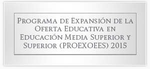
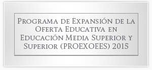

¡Te invitamos a ser parte de la primer
función del club del cine!
El Instituto Tecnológico de Culiacán en conjunto con El
Centro de Información (Biblioteca) nos complace el
...

Alemania
Convocatoria
¿Eres estudiante y estas cursando los dos ultimos semestres
de tu carrera y quieres llevar tus conocimientos a
Se les informa a los alumnos de 1er al 6to semestre, podran
cargar en linea las actividades complementarias, a partir del
dia 05 al 08 de septiembre 2017, en un
 
Cambridge
Fecgas de pre-registro: 4 al 8 de septiembre del 2017. Nota:
Favor de respetar las fechas, de lo contrario no se
realizaran los tramites. Horario de atencion: 8:00 a 14:00
hrs. de ...
El Instituto Tecnologico de Culiacan a traves de la
subdireccion academica y la division de estudios
profesionales con la finalidad de reconocimiento
profesional a los egresados de las institucion de...
A causa del huracan cerca de nuestro estado
se suspenderan las clases el dia de hoy..


Av. Juan de Dios Batiz 310 Pte. Col. Guadalupe, Culiacan, Sinaloa. C.P80220 Telefono: +52(667)713-1796 y 713-38-04
Tecnologico Nacional de Mexico-Algunos derechos reservados 2015
Politica de Privacidad